REBOOT TIPO
CAR WRAPPING
車の印象を変えたい！だけど塗装だと抵抗がある
お客様好みのカラーでデフォルトカラーにはないカスタムカーとして見た目も愛着もアップ！
塗装と違いカラーフィルムを剝がすことで
元へと戻す事ができる
元の塗装を傷める事なく
紫外線や細かい傷などからボディを守る
REBOOT TIPO オリジナルカラーと
納得の仕上がりをお約束致します。
包む
仕上げの見本
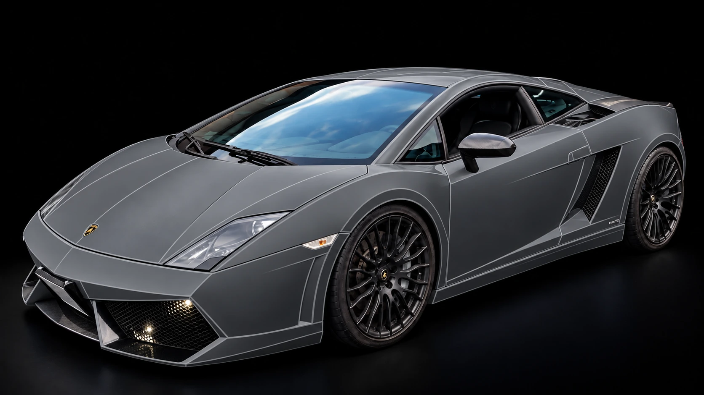
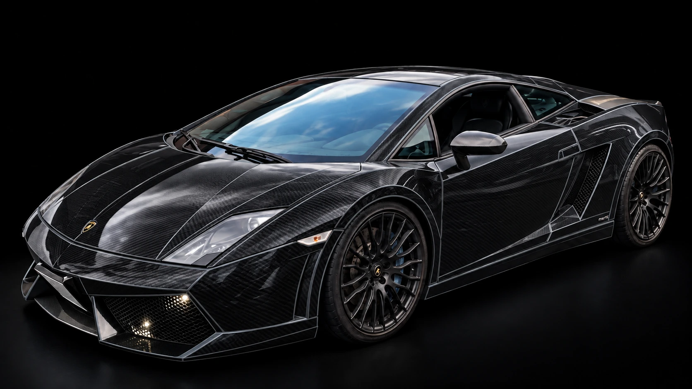
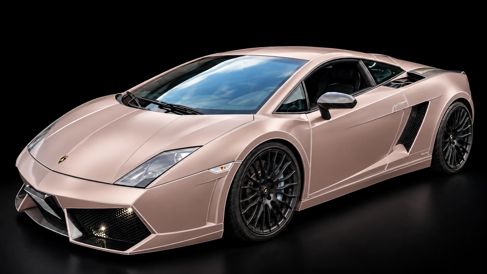
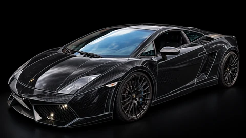
仕上げを
選ぶ
カラーバリエーションや仕上げ（マット・メタリック・カーボン調など）も豊富にあるので自由なカスタマイズが可能です。

施工の記録
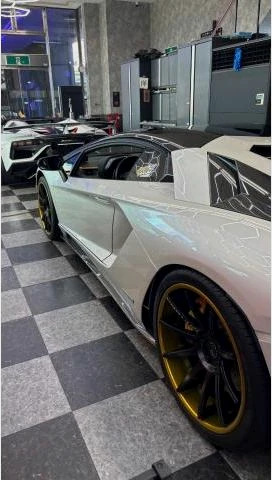
ランボルギーニ アヴェンタドール ホイール、サイドゴールドラインラッピング
施工の記事を読む
トヨタ 50プリウス オリジナルステッカー施工 カーラッピング
施工の記事を読む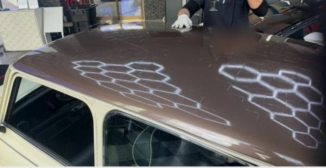
ＭＩＮＩ ＭＩＮＩ カーラッピング
施工の記事を読むメルセデス・ベンツ Ｅクラス マイバッハ風ツートンラッピング
施工の記事を読む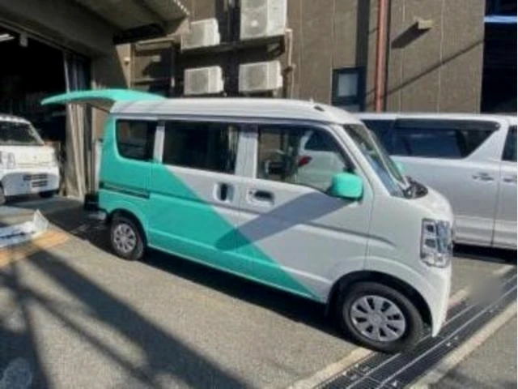
スズキ エブリイ ハーフラッピング スロットルバルブ清掃 ターボ交換
施工の記事を読むハーレーダビッドソン ロードキング フルラッピング 点検整備
施工の記事を読む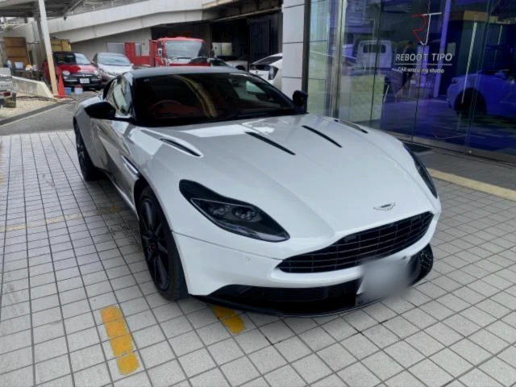
アストンマーティン DB11 ラッピング マフラー加工 点検整備
施工の記事を読む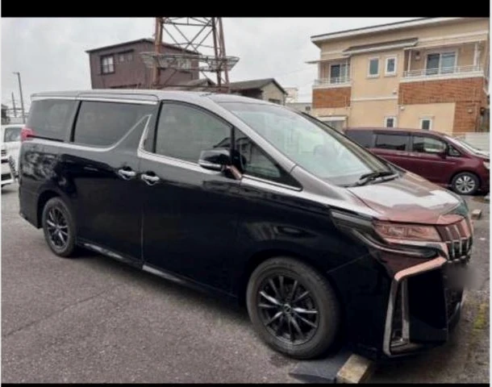
トヨタ アルファード カーラッピング
施工の記事を読む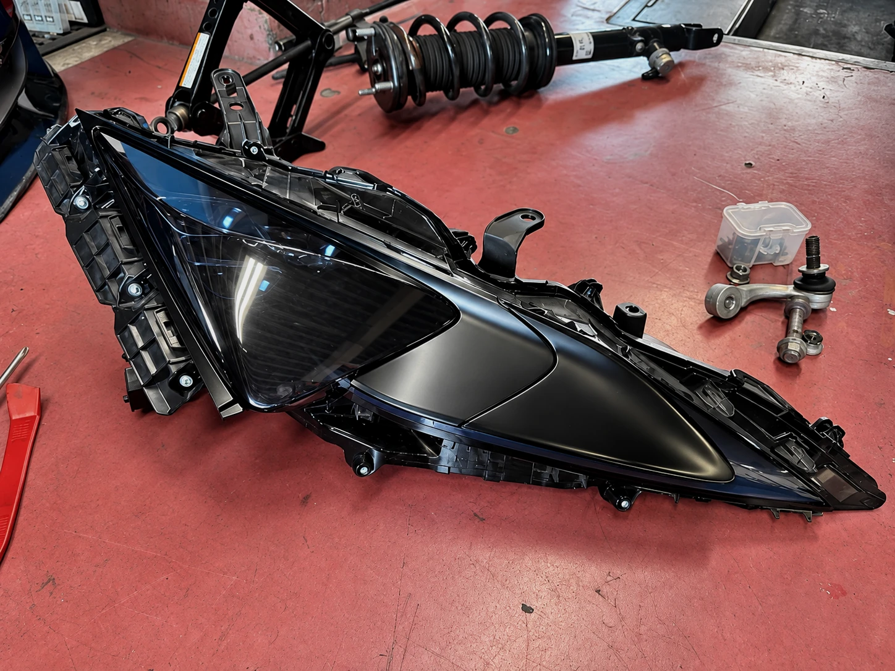
守る
守る
プロテクションフィルムと同様にボディを保護する効果もあるため、元のボディを綺麗な状態で保てます。
ラッピング加工車はボディが施工時を維持できる為、車の価値が傷などで下がるリスクを防げます。
レクサス LCヘッドライトスモークTPUフィルム施工
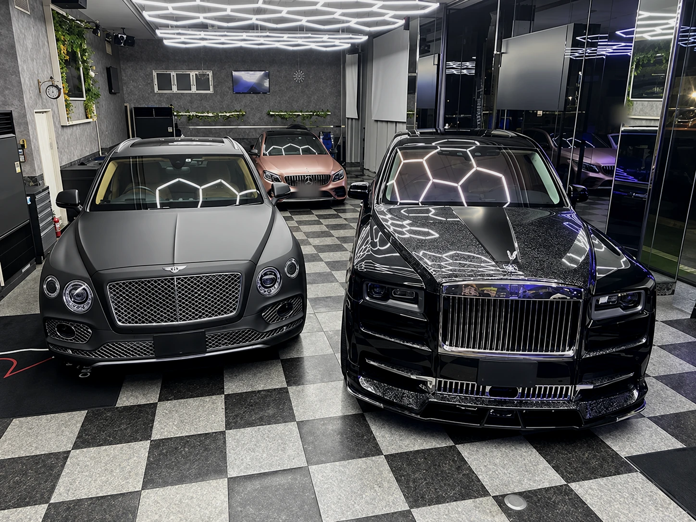
REBOOT TIPO
板金塗装／カーラッピング／カスタム／車検／整備／登録納車まで全て自社でおこないます。
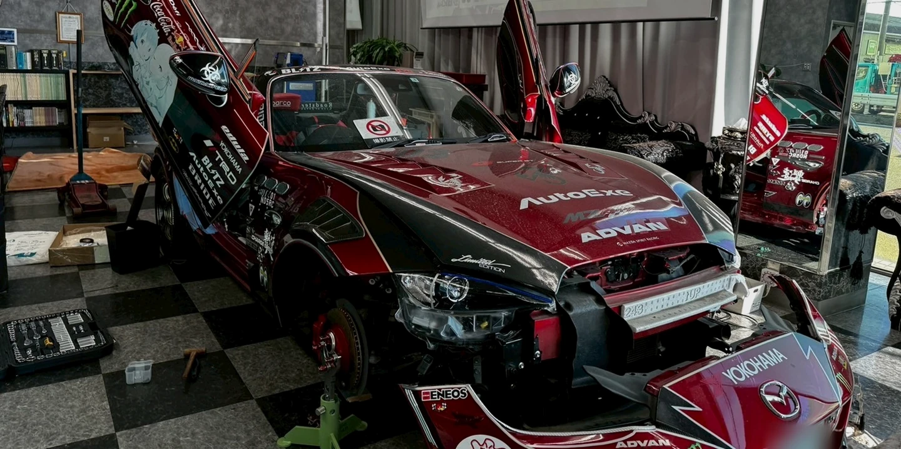